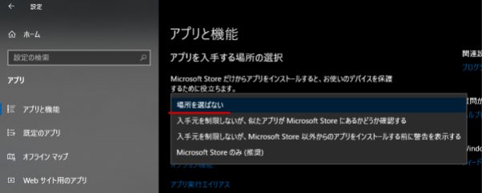
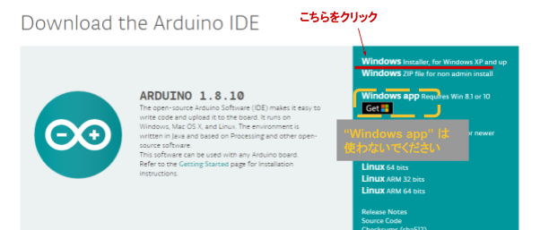
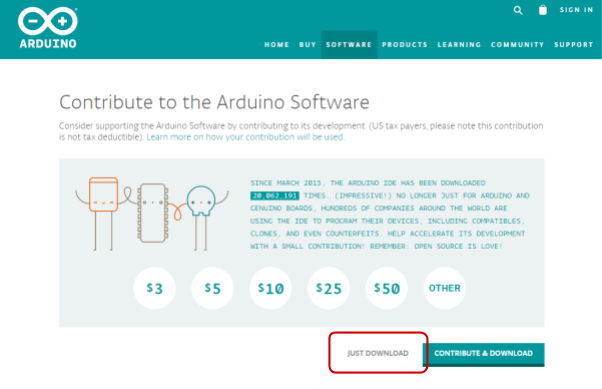
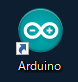
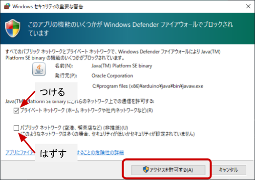

Arduino IDE のセットアップを Windows パソコンで行います。
ページの内容を読み、また作業を行ったら右下の［Next］を押して次のステップへ進みます。また、［Back］を使って戻ったり、左のナビゲーションメニューでもページの移動が可能です。
左上の［×］を押してコンテンツを終了することができます。また、ページを開きなおすことで再開できます。ページのアドレスはブラウザの［履歴］メニューを利用してください。
Arduino IDE のセットアップには以下のものを用意、もしくは、確認・検討ください。
パソコン、 ブラウザー、インターネット接続環境 |
|
Windows 10 の方は以下の手順を行ってください。
それ以外のバージョンの方は次へ進んでください。
［スタートメニュー］>［[設定］>［アプリ］>［アプリと機能］>［アプリを入手する場所の選択］ を開き、 場所を選ばないを選びます。
すでに選択されている場合は次に進んでください。

Arduino のダウンロードページを開き、Windows Installer をクリックします。

そのあと表示されるページではJUST DOWNLOADをクリックします。

ダウンロードした EXE ファイルをダブルクリックしてセットアップを開始してください。
インストール中の各ダイアログは、以下のようにしてください。
Installation Options | すべて選択 |
このデバイスソフトウェアをインストールしますか？ | インストール ※3回聞かれますが、全て同じようにしてください |
Completed となったら［Close］をクリックしてインストール完了です。
デスクトップ上の "Arduino" が「Arduino IDE」です。これをダブルクリックすることで Arduino IDE が起動します。

Arduino IDE の初回起動時に「Windows セキュリティの重要な警告」が表示されることがあります。以下のように対処してください。
プライベート ネットワーク | チェックをつける |
パブリック ネットワーク | チェックをはずす |

最後に［アクセスを許可する］をクリックします。
Arduino IDE を終了させるには［ファイル］>［終了］をクリックするか、ウィンドウ右上の閉じるボタンで全てのウィンドウを閉じます。
以上で Arduino IDE のセットアップは終了です。